Cool the Earth! is a project aimed at integrating data visualization into a
children’s educational game about the effects of greenhouse gasses.
Solo
4 Weeks
Project Overview
The goal of this project was to design and publish an interactive data visualization that adds value to a
speculative product or service. I decided to blend topics I had interest in: sustainability, children’s
education, and game development.
HOW MIGHT I...
Integrate data visualization in children’s game about sustainability in a way that is both easy to understand
and fun?
Cool the Earth!
I designed a mockup of a game for an educational children’s gaming app that would feature a collection of
mini-games. Cool the Earth, teaches kids how different countries contribute to
greenhouse gas emissions by amount and sector. Through hands-on, interactive play, children can learn how
greenhouse gases impact global warming.
The Journey
Who are Our Users?
To start designing my speculative product, I first defined my target audience. Doing this gave me a starting
point for future design decisions based on user needs determined by factors like their cognitive level and
visual preferences.
A persona and user journey map was also created to ground my design decisions.
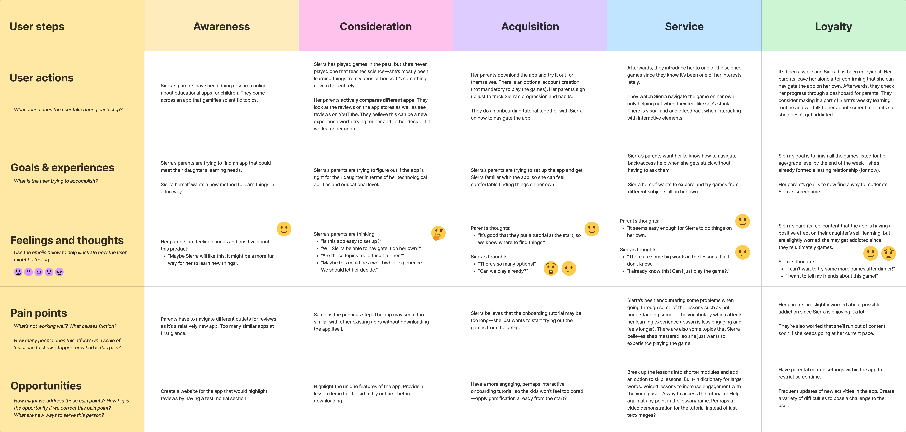
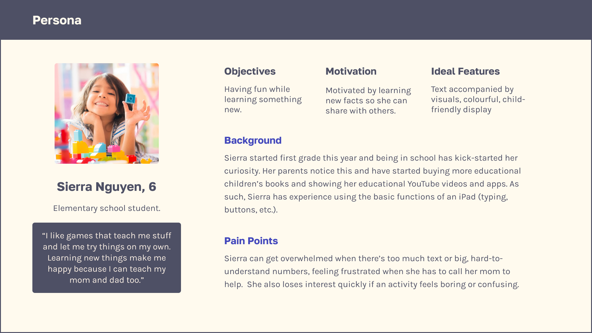
Working with the Data
I chose to use green house gas emissions data from Our World in Data for my data source. The
first thing I
needed to do was narrow down and clean the massive dataset. With the data prepared for each country’s emissions
to be visualized, I was ready to start designing.
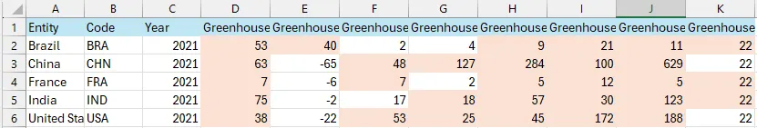
Designing for Kids
What Makes a "Children's Game"?
I did a Competitor Analysis gained an understanding of existing experiences and design patterns which helped me
later on when I was developing my own assets. I noted down their user flow, how each taught through
gamification, as well as their visual branding.
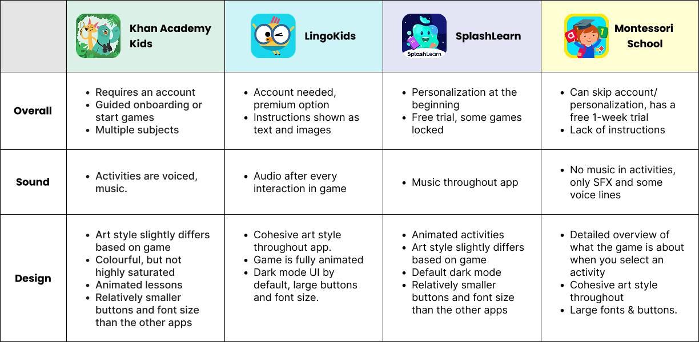
Elements that I found to be important to children’s games include:
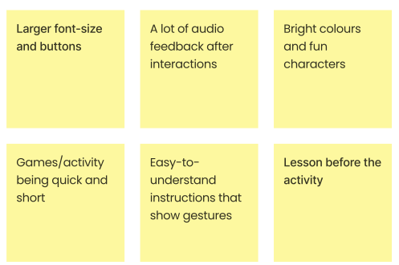
Game Concepts
BRICK BREAKER
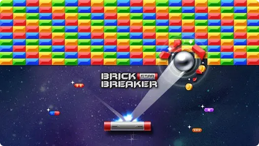
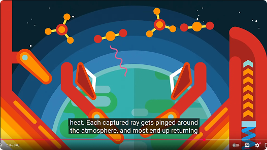
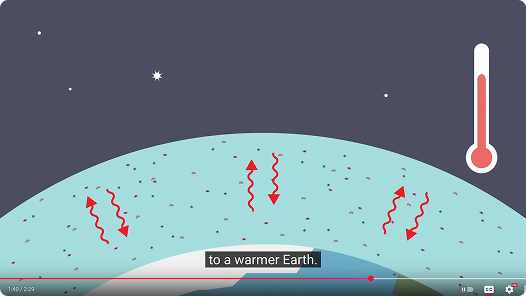
I based the mini-game on a Brick Breaker–style mechanic to visually and interactively represent how greenhouse
gases trap heat in Earth’s atmosphere. Inspired by educational videos that used reflection and deflection
metaphors, the ball represents heat attempting to escape, while the number of bricks scales with a country’s
greenhouse gas emissions. This mechanic allows children to physically feel how increased emissions make it
harder for heat to escape, reinforcing the concept through play.
To the left is a video of a basic prototype I made using Godot engine that captures the functionality of
Brick Breaker. However, this game concept was later scrapped after a feedback session where it was brought to
my attention that the way I was presenting my data was potentially misleading.
WINGO BALL
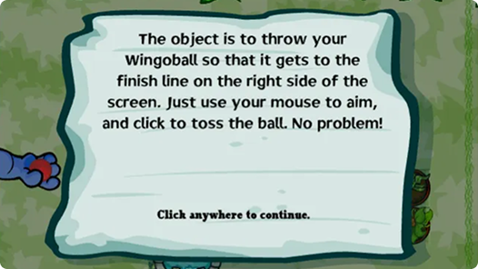
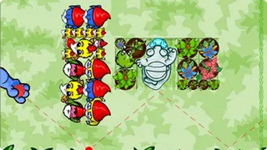
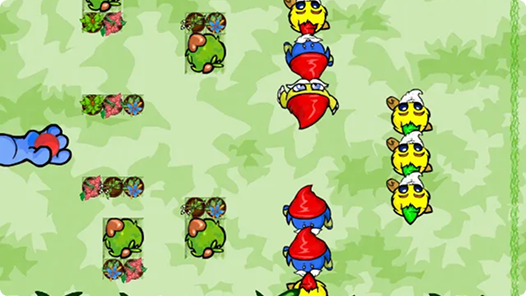
The chosen iteration was inspired by the flash game Wingoball which focuses on navigating a ball through
obstacles to reach a safe zone. In this concept, the ball represents heat escaping Earth’s atmosphere, while the
size of the obstacles is equal to a country’s greenhouse gas emissions. Instead of emphasizing quantity, this
approach communicates impact through scale, allowing children to experience how higher emissions make it more
difficult for heat to escape.
Visual Assets
GREENHOUSE GASSES
Inspired by a Futurama episode that personified greenhouse gases and children's books, I explored
personaification to make abstract concepts more understandable for children.
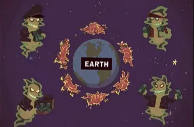
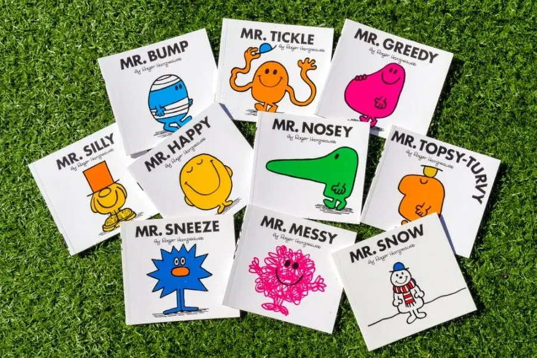
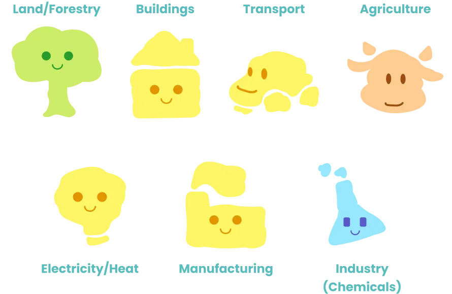
USER INTERFACE
I took the observations I had while exploring each children’s app, used it as inspiration, and translated that
into my own app’s design.
My first iteration was very flat and simple. Inspiration was drawn from Khan Academy Kids’
UI that does a great job at looking playful and inviting which appeals to children
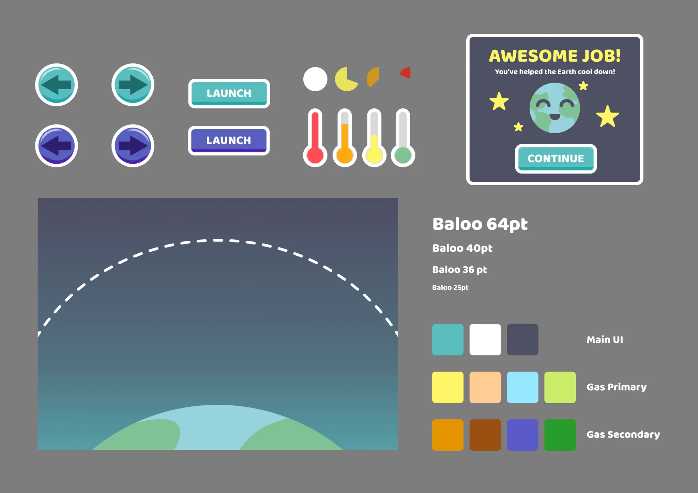
Putting it Together
In order to accurately represent the data, bubble charts were created in Tableau. This allowed me to get a
meaningful scale of the data. The green house gas graphics were then resized to match their respective bubble.
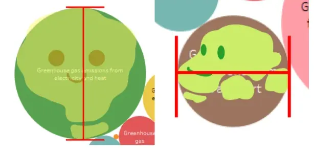
For the purpose of creating a mockup, the game was entirely animated using Adobe After Effects. Everything was
later put together in Figma along with the lesson portion of the product.
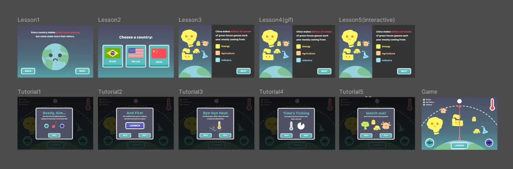
Try it out below!
Reflection: Designing Data for Young Minds
My goal was to integrate a data visualization into a product while designing for children. This required meant
that I had to simplify complex data without misrepresenting its meaning. Throughout the project, I constantly
asked myself, "Could a child understand this?" Balancing accuracy with accessibility became a central design
challenge and ultimately shaped many of my decisions.
If I were to continue building out this project, I
would conduct usability testing with real users to evaluate understanding, engagement, and potential pain
points, then iterate based on those findings.